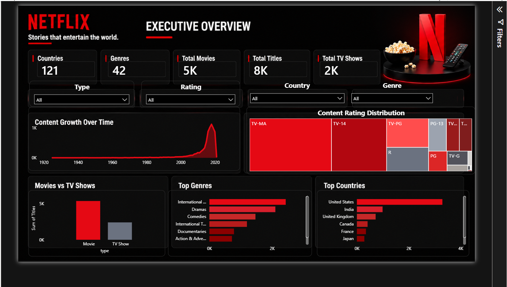
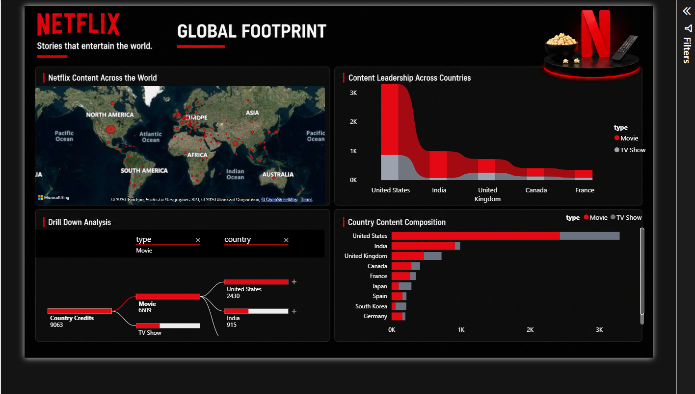
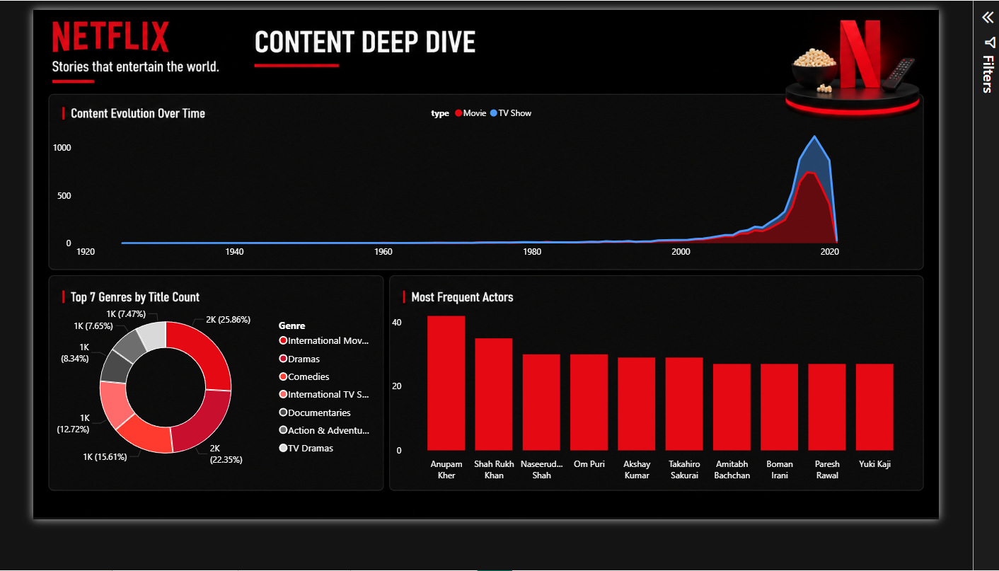

Executive Overview

Global Footprint

Content Deep Dive

Key Insights
- 📈 Content growth accelerated after 2015.
- 🌍 Top countries contribute most of Netflix content.
- 🎭 Drama and International Movies dominate.
- 🔞 TV-MA and TV-14 are the most common ratings.
- 📺 Movies consistently outnumber TV Shows.